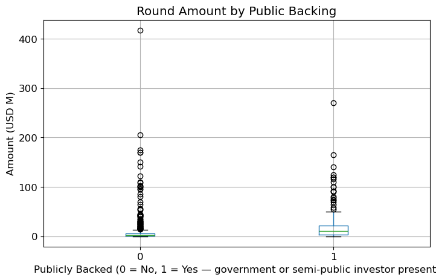
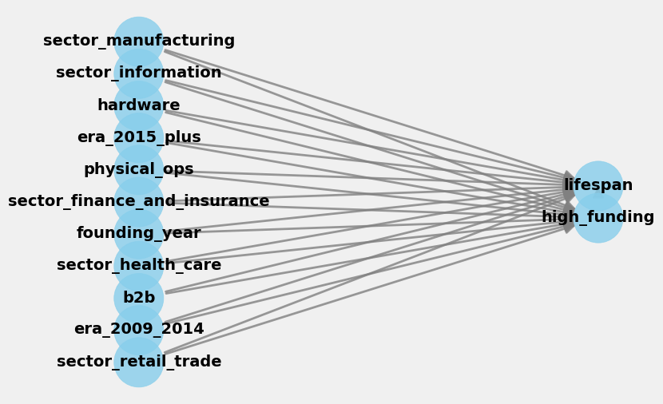

I am currently pursuing a Masters of Management in Analytics @ McGill's Desautels Faculty of Management and am expected to graduate in Summer 2027.
My goal is to build a career in venture capital or adjacent organizations, helping make capital allocation more data-driven, rigorous, and inclusive. The MMA is where I'm building the technical foundation for that: fluency in Python, R, and SQL, advanced statistics, and coursework spanning valuation analytics, text analytics, and AI, capped by a hands-on capstone project with live datasets and industry clients. I'm a strong fit for this path thanks to 2.5 years inside the VC data ecosystem at Dealroom.co, plus an undergraduate thesis researching gender bias in startup funding - both of which convinced me that better data models can meaningfully close those gaps.
French national. Will hold a valid Canadian Post-Graduation Work Permit (PGWP) upon graduation.
Education
McGill University, Desautels Faculty of Management - Master of Management in Analytics (MMA)
IE University - Bachelor in Business Administration
McGill University - Exchange Semester, Desautels Faculty of Management
International School of Brussels - International Baccalaureate
Technical Skills
Languages
Extracurricular Activities
Originelle (Global-Renowned Fertility Clinic) — Academic Analytics Consulting Project
- 8-month capstone project with McGill's Master of Management in Analytics, partnering with Originelle to architect a secure, unified data infrastructure on Azure linking previously siloed lab, nursing, and clinical records to support operational bottleneck analysis and efficiency recommendations.
- Designing the technical framework for exploratory and clustering-based patient analytics, structuring how treatment-response patterns are derived from historical IVF/IUI data.
- Selecting the tool stack (Python, SQL, Power BI) and structuring the architecture for a prototype lab-quality monitoring dashboard tracking core oocyte and embryo KPIs.
Dealroom.co (Leading Data Platform on Global Tech Ecosystems & Startups)
- My role involves selling, end-to-end project management and report delivery. This includes developing and maintaining a robust taxonomy for emerging sectors, data validation, conducting quantitative analysis and qualitative research, and crafting insightful narratives. I also manage client communication, create assets for social media, and present findings in person at conferences and online.
- My main industry focus areas include Climate Tech (Green Mobility, Sustainable Food & AgriTech, etc.), Deep Tech (Robotics, AI, etc.) and Health (Biotechnology, Digital Health, etc.).
- Notable accomplishments include 1/ authoring a Blue Economy deep dive, which was referenced at the UN World Ocean Conference and by the World Economic Forum. 2/ collaborating with Bpifrance, France's leading public investment bank, to assess the State of Deep Tech in France. 3/ producing the most comprehensive industry report to date on Longevity for Speedinvest (a leading European VC) and Generali (a major global insurer) and sharing my insights on Dealroom's podcast.
- To date, I have produced over 20 market intelligence reports and presented my work at more than five industry conferences. Each report published through Dealroom reaches over 2k online viewers, supported by a LinkedIn audience of 40k+ followers.
- In my workflow, I leverage tools such as ChatGPT and OpenAI integrations, BigQuery SQL for large-scale data analysis, Excel for financial modeling and data manipulation, and Datawrapper for data visualization.
D2X Group (Digital Assets Derivatives Exchange)
- Joined at a very early stage of this innovative startup which has since become the first regulated trading platform for institutional investors in crypto derivatives.
- I produced research for the CEO on new revenue opportunities, strategic partnerships, and key industry developments. My insights were regularly reported to the board of investors, executive committee, and financial regulators.

Predicting Quebec Startup Funding Round Size
Test RMSE: $19.3M · tuned Random Forest
I wanted to know what predicts the size of a startup funding round in Quebec. So I cleaned and modeled 356 disclosed Dealroom.co funding rounds (2021–present) with a tuned Random Forest. Here's what I found: growth stage and funding history mattered far more than public/government backing itself.
Python · pandas · scikit-learn
View on GitHub →

Causal Inference on Startup Failures
Est. effect: +2.2 years from high funding (95% CI 1.6–2.8)
I wanted to know whether more funding, or losing to tech giants, actually changes how long a failed startup lasts. So I built causal models (CausalML, DoWhy) on 356 failed startups and stress-tested the estimates with refutation tests. Here's what I found: funding has a real, moderate effect; losing to giants doesn't.
Python · CausalML · DoWhy · XGBoost
View on GitHub →
Project Title
Short description of what you did and the tools you used.